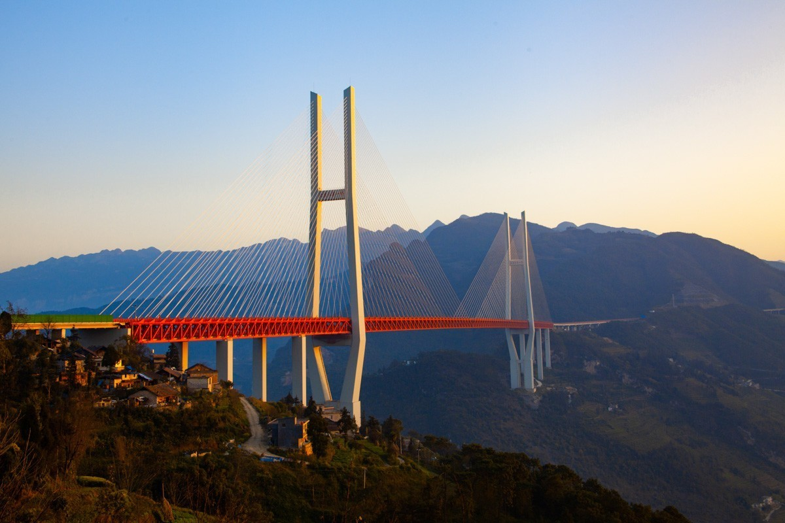
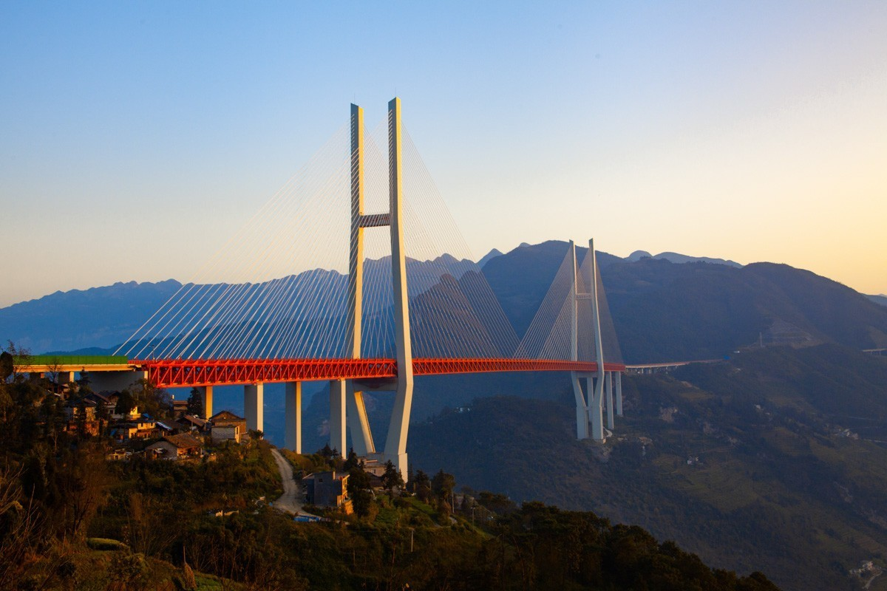

Brooklyn Bridge

Designed by German-American engineer John Roebling and spanning 486 meters across New York’s
East
River, the Brooklyn Bridge was officially opened in May
1883 and laid claim to the
title of
‘world’s longest suspension bridge’ until it was pipped to the post by the nearby
Williamsburg
Bridge in 1903, which surpassed its length by two meters. Nevertheless, the Brooklyn Bridge
is
one of the most iconic architectural features of New York City’s stunning skyline and has
been
recognized with many accolades including becoming a designated National Historic Landmark in
1964 and a National Historic Civil Engineering Landmark in 1972.
------------------------------------------------------------
Si O Se Pol Bridge
.webp)
Also known as the Allāhverdi Khan Bridge, Iran’s Si-o-se Pol (which translates as ‘Bridge of
33 Arches’) dates back to 1602 and stretches across the Zayandeh Rood River in Isfahan,
connecting its historical main avenue Chahar Bagh with the neighborhood of New Jolfa.
Commissioned by Shah Abbas I of Persia, Si-o-se Pol is almost 300 meters long and 14 meters
wide and is considered one of the world’s finest examples of Safavid dynasty era bridge
design. Alongside the equally impressive, but slightly younger Pol-e Khaju built in 1650 and
the ancient Pol-e Shahrestan, dating back as far as the 3rd century, Si-o-se Pol is one of
11 bridges in Isfahan.
------------------------------------------------------------
Golden Gate Bridge
.jpeg)
San Francisco’s magnificent Golden Gate Bridge – designed by American civil engineer Joseph
Baermann Strauss in a grand Art Deco style and officially opened in 1937 after seven years
of construction – is one of the city’s, if not the entire West Coast’s, most iconic
architectural feats. Its famous color, often mistaken for red but actually ‘International
Orange’, was chosen for its ability to complement its existing environment and remain
visible in the Bay Area’s legendary fog. The building of the Golden Gate Bridge made major
contributions to construction safety with Strauss insisting on the installation of a safety
net, amusingly dubbed the ‘Halfway-to-Hell Club’ by workers.
------------------------------------------------------------
Gateshead Millennium Bridge

The Gateshead Millennium Bridge is a pedestrian and cyclist tilt bridge spanning the River
Tyne between Gateshead arts quarter on the south bank and Newcastle upon Tyne's Quayside
area on the north bank. It was the first tilting bridge ever to be constructed. Opened
for public use in 2001, the award-winning structure was conceived and designed by
architectural practice WilkinsonEyre and structural engineering firm Gifford.The bridge
is sometimes called the 'Blinking Eye Bridge'or the 'Winking Eye Bridge' due to its
shape and its tilting method. The Millennium Bridge stands as the twentieth tallest
structure in the city, and is shorter in stature than the neighbouring Tyne Bridge
------------------------------------------------------------
Opaoa River Bridge

The Opawa River Bridge is a reinforced concrete bowstring truss bridge in Blenheim, New
Zealand that crosses the Ōpaoa River. The bridge is classified as a "Category I" ("places of
special or outstanding historical or cultural heritage significance or value") historic
place by the Heritage New Zealand, formerly known as New Zealand Historic Places Trust.
The bridge was first built in 1869 but collapsed in 1878. A new bridge was not completed
until the end of 1917.
------------------------------------------------------------
Tabiat Bridge

The Tabi'at Bridge (Persian: پل طبیعت, lit.'The bridge of nature') is the largest pedestrian
overpass in Tehran, Iran. The 270-metre (890 ft) bridge connects two public parks —
Taleghani Park and Abo-Atash Park — by spanning Modarres Expressway, one of the main
highways in northern Tehran. The word tabiat means "nature" in the Persian language.
The bridge was designed by Diba Tensile Architecture (Leila Araghian and Alireza
Behzadi). It has won several awards, including the Popular Choice Prize for Highways &
Bridges from the Architizer A+ Awards, a global architectural competition based in New
York. The bridge also won the 2016 Aga Khan Award for Architecture for its
exemplary approach to an infrastructure project, "a breath of fresh air" according to the
award jury.
------------------------------------------------------------
Tower Bridge
Tower Bridge is a Grade I listed combined bascule and suspension bridge in London, built
between 1886 and 1894, designed by Horace Jones and engineered by John Wolfe Barry with the
help of Henry Marc Brunel.[1] It crosses the River Thames close to the Tower of London and
is one of five London bridges owned and maintained by the Bridge House Estates, a charitable
trust founded in 1282. The bridge was constructed to give better access to the East End of
London, which had expanded its commercial potential in the 19th century. The bridge was
opened by Edward, Prince of Wales and Alexandra, Princess of Wales in 1894.
------------------------------------------------------------
Truss bridge
A truss bridge is a bridge whose load-bearing superstructure is composed of a truss, a
structure of connected elements, usually forming triangular units. The connected elements
(typically straight) may be stressed from tension, compression, or sometimes both in
response to dynamic loads. The basic types of truss bridges shown in this article have
simple designs which could be easily analyzed by 19th and early 20th-century engineers. A
truss bridge is economical to construct because it uses materials efficiently.
------------------------------------------------------------
Arch bridge

An arch bridge is a bridge with abutments at each end shaped as a curved arch. Arch bridges
work by transferring the weight of the bridge and its loads partially into a horizontal
thrust restrained by the abutments at either side. A viaduct (a long bridge) may be made
from a series of arches, although other more economical structures are typically used today.
------------------------------------------------------------
Beam Bridge
Beam bridges are the simplest structural forms for bridge spans supported by an abutment or
pier at each end. No moments are transferred throughout the support, hence their
structural type is known as simply supported.
The simplest beam bridge could be a log (see log bridge), a wood plank, or a stone slab (see
clapper bridge) laid across a stream. Bridges designed for modern infrastructure will
usually be constructed of steel or reinforced concrete, or a combination of both. The
concrete elements may be reinforced, prestressed or post-tensioned. Such modern bridges
include girder, plate girder, and box girder bridges, all types of beam bridges.
------------------------------------------------------------
Danyang-Kunshan Grand Bridge
The bridge is located on the rail line between Shanghai and Nanjing in Jiangsu province. It
is in the Yangtze River Delta, where the geography is characterized by lowland rice paddies,
canals, rivers, and lakes. The bridge runs roughly parallel to the Yangtze River, about 8 to
80 km (5 to 50 mi) south of the river. It passes through the northern edges of population
centers (from west to east) beginning in Danyang, Changzhou, Wuxi, Suzhou, and ending in
Kunshan. There is a 9-kilometre long (5.6 mi) section over open water across Yangcheng Lake
in Suzhou.
Construction was completed in 2010 and the bridge opened in 2011. Employing 10,000 people,
the project took four years and cost about $8.5 billion.The bridge currently holds the
Guinness World Record for the longest bridge in the world in any category as of June
2011.
------------------------------------------------------------
Changhua-Kaohsiung Viaduct

The Changhua-Kaohsiung Viaduct (Chinese: 彰化－高雄高架橋) is the world's second longest
bridge. The bridge acts as a viaduct for part of the railway line of the Taiwan
High Speed Rail network. Over 200 million passengers had been carried over it by December
2012.
Completed in 2004, the bridge is 157.317 kilometers (97.752 mi) in length. The railway
is built across a vast series of viaducts, as they were designed to be earthquake resistant
to allow for trains to stop safely during a seismic event and for repairable damage
following a maximum design earthquake. Bridges built over known fault lines were designed
to survive fault movements without catastrophic damage.
------------------------------------------------------------
Tianjin Grand Bridge

Tianjin Grand Bridge (Langfang–Qingxian viaduct) is a railway viaduct bridge that runs
between Langfang and Qingxian, part of the Beijing–Shanghai High-Speed Railway. It is one
of the longest bridges in the world with a total length of about 113.7 kilometers (70.6 mi).
It was completed in 2010 and opened in 2011. At the time Guinness World Records recorded it
as the second longest bridge in the world.
------------------------------------------------------------
Puli Bridge

Puli Bridge is a suspension bridge near Xuanwei, Qujing, China. The bridge, at 485 m (1,591
ft), is one of the highest in the world.The bridge forms part of the G56
Hangzhou–Ruili Expressway between Liupanshui and Xuanwei and was opened in August
2015.The bridge and associated expressway reduced the travelling time from Xuanwei to
the Guizhou border from four hours to one hour.The bridge crosses a small
stream beside the Gexiang River gorge.
------------------------------------------------------------
Duge Bridge

The Duge Bridge ([tú.kɤ̌]), also called the Beipanjiang Bridge, is a 4-lane cable-stayed
bridge on the border between the provinces of Guizhou and Yunnan.As of 2021, the
bridge is the highest in the world, with the road deck sitting over 565 metres (1,850 feet)
above the Beipan River.The bridge is part of the G56 Hangzhou–Ruili Expressway
between Qujing and Liupanshui. The eastern tower measures 269 m (883 ft) making it one of
the tallest in the world.
------------------------------------------------------------
The Sidu River Bridge

The Sidu River Bridge (Siduhe Bridge, 四渡河特大桥) is a 1,222 m-long (4,009 ft) suspension bridge
crossing the valley of the Sidu River near Yesanguan in Badong County of the Hubei Province
of the People's Republic of China. The bridge was designed by CCSHCC Second Highway
Consultants Company, Limited. and built at a cost of 720 million yuan (approximately US$100
million). It opened to traffic on November 15, 2009.
------------------------------------------------------------
Pons Fabricius Bridge

The Pons Fabricius (Italian: Ponte Fabricio, "Fabrician Bridge") or Ponte dei Quattro Capi,
is the oldest Roman bridge in Rome, Italy, still existing in its original state.Built in
62 BC, it spans half of the Tiber River, from the Campus Martius on the east side to Tiber
Island in the middle (the Pons Cestius is west of the island). Quattro Capi ("four heads")
refers to the two marble pillars of the two-faced Janus herms on the parapet, which were
moved here from the nearby Church of St Gregory (Monte Savello) in the 14th century.
------------------------------------------------------------
The Arkadiko Bridge

The Arkadiko Bridge or Kazarma Bridge is a Mycenaean bridge near the modern road from Tiryns
to Epidauros in Argolis on the Peloponnese, Greece. The stone crossing, which is dated to
the Greek Bronze Age, is one of the oldest arch bridges still in existence which is still
crossable today. It is the oldest preserved bridge in Europe.
------------------------------------------------------------
Caravan Bridge
Caravan Bridge (Turkish: Kervan Köprüsü) is an ancient bridge in the city of İzmir, Turkey.
It was built in approximately 850 BC over the Meles river, and is one of the oldest man-made
structures in continuous use.In antiquity, the River Meles was said to be the birthplace
of Homer, and both the river and the bridge was featured in Homer's work.
------------------------------------------------------------


 
